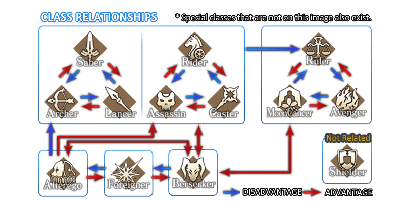

|
Fate/Grand Order Wiki |
|---|
Servants
Servants are Heroic Spirits that you, as the Master, command in Battle. Each Servant has a Class, active skills, passive skills, and Noble Phantasm. They are also grouped into 3 types:
The Knight classes: Saber, Archer and Lancer.
Cavalry classes: Rider, Caster, Assassin and Berserker.
And Extra classes: Ruler, Avenger, Moon Cancer, Shielder, Alter Ego and Foreigner.

Servants are primarily obtained via summoning. 3★ Servants or below may be summoned for 200 Friend Points each, and 3-5★ servants for 3 Saint Quartz each. Some Servants can be obtained as special rewards during events.
You can Ascend Servants to increase their maximum level, slightly changing their art and battle sprites. Ascending can also unlock new skills, all of which can be reinforced. Their Noble Phantasms can also be upgraded; combining the same Servant upgrades the NP level, while completing Interludes may upgrade the rank.
Craft Essences can be equipped to your servants to increase their stats and abilities.
Feeding Servants Experience Cards or other Servants grants experience. When enough experience is gained to level up, their ATK and HP increases. Status Up Cards also increase ATK and HP, but these stat gains are independent of levels and have a maximum value of 1000 per Servant. It is now possible to have Servants gain yet another 1000 points to each stat with the inclusion of 4★ Status Up Cards.
Each Servant has an Attribute that also slightly affects their performance in battle.
Having Servants in your Party when completing a quest will increase their Bond level, which unlocks their biography and the ability to do Interludes if available.
Servants can also be found as enemies in quests.
When starting a quest, you can choose another player's Support Servant based on each class to help you in battle.
You can also burn Servants to gain QP and Mana Prisms.
There are currently 280 Servants, of which 114 are limited or unplayable (As of May 2020), either because they were only obtainable as event rewards, they have not been added to the general summoning pool yet, or they are only available for limited times.
SERVANT TRIANGLE
